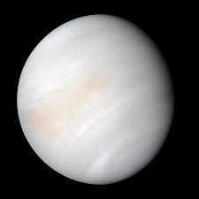
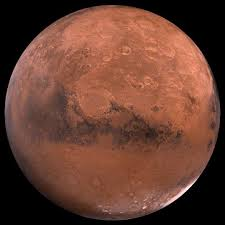
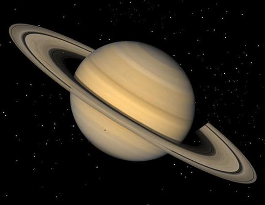
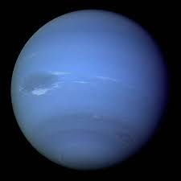
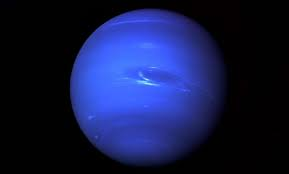

მერკური
მერკური არის მზის სისტემაში ყველაზე ახლო პლანეტა.

ვენერა
ვენერა არის ყველაზე ცხელი პლანეტა მზის სისტემაში.

მარსი
მარსი, წითელი პლანეტა.
იუპიტერი
იუპიტერი არის მზის სისტემაში ყველაზე დიდი პლანეტა.

სატურნი
სატურნი ცნობილია თავისი რგოლებით.

ურანი
ურანი არის ცივი პლანეტა, რომელიც ზღვარს მისახვედრია.

ნეპტუნი
ნეპტუნი არის ვიოლეტის პლანეტა, შორეული მზის სისტემის კიდეებიდან.